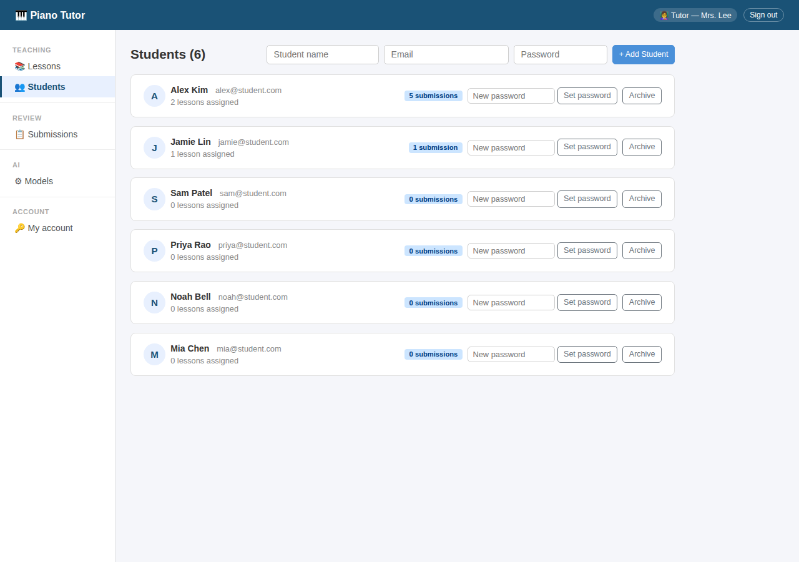
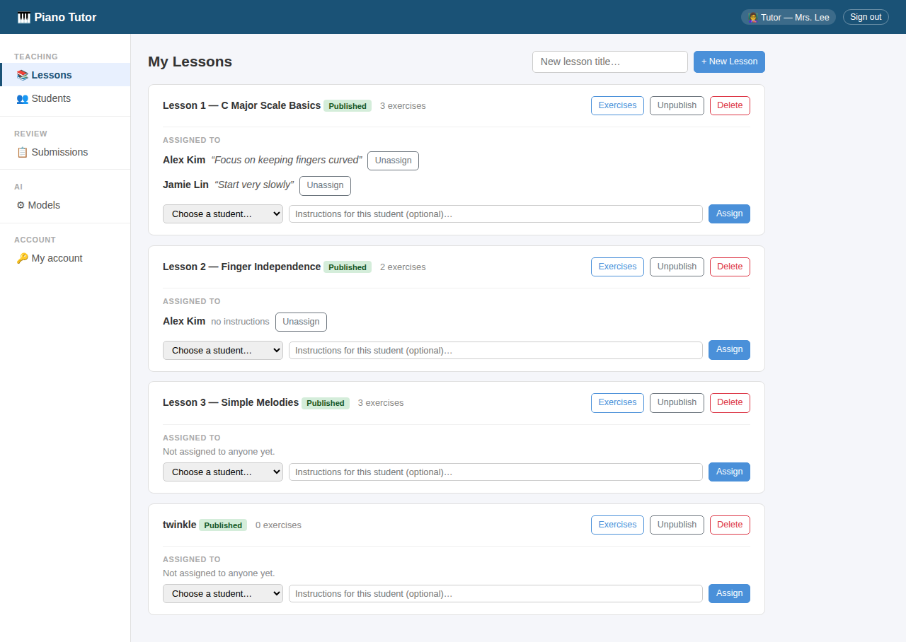
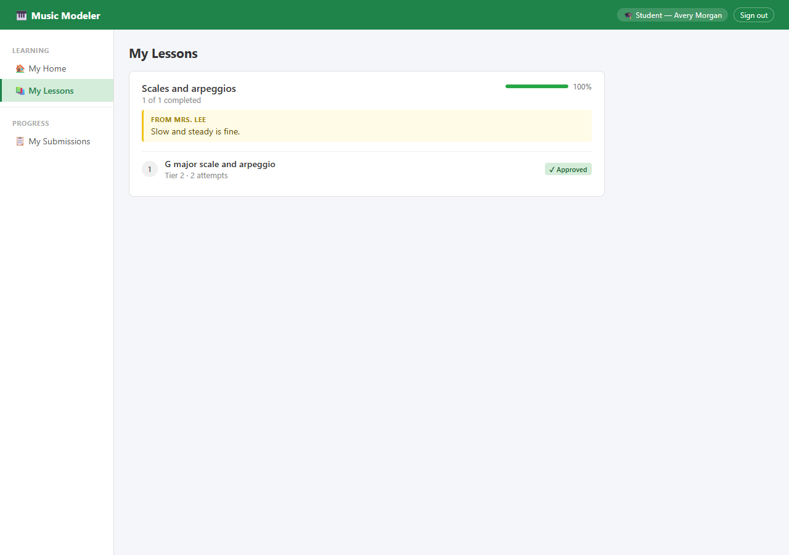
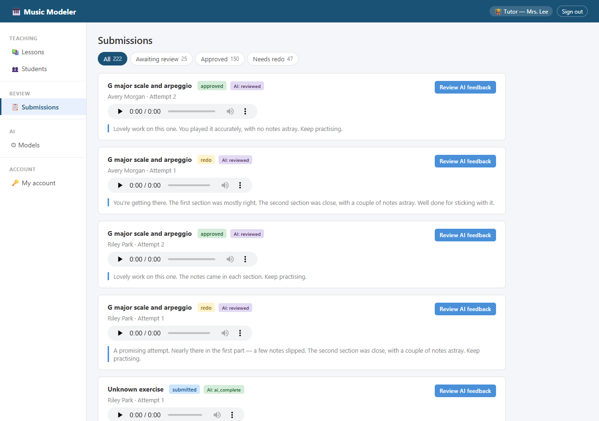
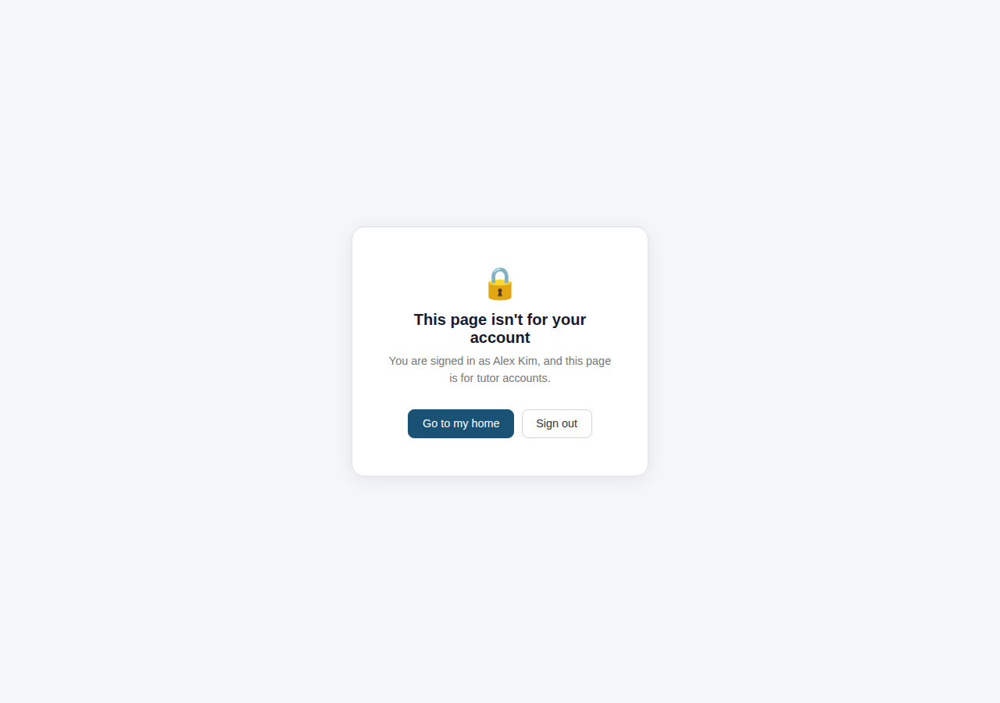

The toolset, step by step
This page follows one practice attempt through the Music Modeler app, from the teacher setting an exercise to the student reading approved feedback. It then follows one real case through the evaluation harness that tested and trained the system. The screens are from the running app with its sample accounts: a teacher, Mrs. Lee, and a student, Avery Morgan. Click any screen to see it full size, or watch the same loop as a video.
The app, one attempt at a time
Two views share one system. The teacher's side builds lessons and reviews work; the student's side is smaller and shows only what has been set and what has been approved.
The teacher sets up exercises
Each lesson holds exercises. For every exercise the teacher records a reference performance in the browser, or uploads it as MIDI, and chooses a tier: what the student will be assessed on.
- Tier 1: right notes
- Tier 2: + right order
- Tier 3: + even, right speed, notes held right
- Tier 4: + loud and soft
Every score is relative to this recording, not to a printed score.

The teacher manages students
Students are added by name and email. The teacher can reset a password, and archive a student rather than delete them, so a student's practice history is never lost.


The teacher assigns lessons
Lessons are assigned to each student individually, with optional instructions such as "Focus on keeping fingers curved".


The student sees their lessons
The student's app has three places to go: home, lessons and submissions. Only assigned lessons appear. Each exercise shows its tier, how many attempts have been made, and whether the latest is waiting for review or approved.


The student records an attempt
The student listens to the teacher's reference, then records in the browser. Every attempt is kept. The upload returns at once; transcription, scoring and drafting run in the background, so the student never waits.

The attempt is graded
Behind the scenes the recording is transcribed to notes, cleaned, split into the teacher's phrases and scored at the exercise's tier. Several local language models then draft feedback in parallel.
The teacher's submissions list shows each attempt's state and plays every recording inline.


The teacher reviews scores and drafts
The review screen shows the recording, the scores, and one draft per model. This tier-2 attempt at a G major scale and arpeggio missed one note in each phrase: pitch 0.89, precision 1.00, recall 0.80 and order 0.80.
The fine-tuned model's draft matches the scores. The three off-the-shelf models still got things wrong:
None of these is supported by the scores. This is the failure that fine-tuning was used to remove (Part B), and the reason the teacher approves every message.

The teacher approves
The teacher picks a draft and edits it, or writes their own, then approves it or asks for another attempt. On the second attempt the student scored 1.00 everywhere, yet the off-the-shelf models praised things tier 2 doesn't measure: "The tempo feels good" (llama), "a steady, even rhythm" (qwen), "using your hands well" (gemma). The fine-tuned draft said only what the scores show, and the teacher approved it as written.

What the student sees
Only the approved message, next to the recording it is about. The student never sees raw scores or model drafts. Attempts still waiting say so.

Corrections tailor the models
Every approval records each model's draft, the final text and how much the teacher changed. The model screen turns that into a tailoring loop:
- corrections and training examples per model;
- progress to the next retraining point (50, 100, 200, 300 corrections), or retrain on request;
- a leaderboard by how little the teacher had to edit, with average length beside it, because short drafts need less editing whether or not they are better;
- retire a model when it is no longer useful.
The fine-tuned model sits at the top, drafting beside the originals, so everyday reviewing is the comparison.

Roles stay separate
A student who opens a teacher page is told plainly that it isn't for their account, with two ways out. Every page checks the user's role, uploads are filed under the signed-in student, and recordings are only served to people allowed to hear them.


The harness, one real case
The harness does what Part A does, thousands of times, with one difference: it knows the right answer in advance. Below is a real case from the recorded run, followed from start to finish.
The commands
The harness is a command-line tool. A full run goes in this order:
# check the setup; the app's grader must match its recorded fingerprint ptev doctor # 8 hand-written pieces + 32 generated, across 4 tiers ptev catalog build # 6 simulated students: inject mistakes → grade with the real grader → check ptev run-cohort # a reference message, and its list of claims, for every attempt ptev groundtruth # every model writes feedback for every attempt ptev infer ptev report # training data split by case, plus a training script per model ptev export # tuned against original, same settings, fresh runs ptev rescore # a blinded sample for a stronger AI judge, and its scores read back ptev judge export ptev judge ingest
The ledger: what was broken
Simulated student 2 attempts an ascending G-major exercise at tier 2, so speed is not scored. Two notes are dropped, one in each phrase, and each drop is written to the ledger.
On the first draw, one mistake would have been erased by the grader's own clean-up, so it was drawn again. A ledger must describe what was actually played.
case stu02 · ex18 · attempt 1 · tier 2 piece g2_g_ascending_01 severity 0.35 mistake drop phrase 1 G4 (first note) mistake drop phrase 2 D5 affects pitch recall · pitch F1 · order redrawn 1 (clean-up would have erased it)
The scores
The app's real grader scores the attempt. At tier 2 there are no timing or tempo scores at all, so nothing downstream can comment on them.
| Phrase 1 | Phrase 2 | Overall | |
|---|---|---|---|
| Notes expected / played | 5 / 4 | 5 / 4 | 10 / 8 |
| Pitch | 0.889 | 0.889 | 0.889 |
| Order | 0.8 | 0.8 | 0.8 |
The independent check
From the ledger alone, without the grader's code, the harness predicts what the pitch scores must be. Here the prediction and the grader agree, including the check that every played note is assigned to exactly one phrase. Across the whole run, 3,347 such checks passed.
expected pitch, phrase 1 0.889 grader 0.889 ✓ expected pitch, phrase 2 0.889 grader 0.889 ✓ notes assigned once 8 grader 8 ✓ grader faults 0 · generator faults 0
The reference feedback
A reference message is written from the ledger and the scores, in a warm teacher's voice, with a machine-readable list of every claim it makes. These references are what the models are trained on.
"A few notes swapped places" is a generic hint for a lower order score. Here the cause was dropped notes, so the wording overstates it; choosing wording from the actual mistake type is planned.
Decent run, with a couple of rough spots. Close in the first section — a note or two wandered. The second section was close, with a couple of notes astray. Watch the sequence — a few notes swapped places. Onwards.
claims overall pitch 0.889 · phrase 1 pitch 0.889
phrase 2 pitch 0.889 · order 0.8
Drafts before and after training
The same scores, given to each model before and after fine-tuning. At tier 2, any comment on speed or timing is unsupported.
| Model | Draft | Verdict |
|---|---|---|
| gemma2 2B | "…Just focus on keeping the pace up a bit. You played with such nice precision and good timing overall…" | invents pace and timing |
| llama3.2 3B | "For the first phrase, the student is playing one note behind the beat … develop their sense of rhythm…" | invents rhythm |
| qwen2.5 3B | "…play with more precision in timing … aim for consistent placement and even pacing…" | invents timing and pacing |
| gemma2 2B, tuned | "You're getting there. Nearly every note landed in the first section. The second section was close, with a couple of notes astray. Good progress." | accurate, warm, names the phrases |
| llama3.2 3B, tuned | "Good effort — a promising attempt. The first section was mostly right. The second part was close, with a couple of notes astray. Keep practising." | accurate, warm, names the phrases |
| qwen2.5 3B, tuned | "Good effort — the first part was close, and the second part was spot on…" | warm, but wrong about phrase 2 |
Every original model broke the tier rule; every tuned model kept it. One kind but untrue sentence remains, which is why accuracy and tone are scored separately, and why the teacher still approves every message.
Back into the app
The export step writes a training script for each model. After training on a single consumer GPU, the tuned model is merged, compressed to match its original and registered locally. It then appears on the model screen (A10), drafting beside the originals for real students, and real corrections start to accumulate toward its next retraining point.